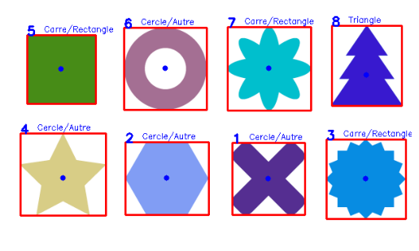
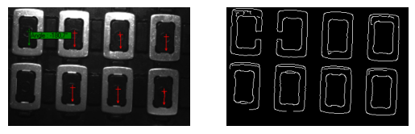

Extraction des Contours
La détection de contours en vision par ordinateur permet d’extraire une liste de formes vectorielles à partir d’une image, représentant les limites des objets détectés. Ces contours peuvent ensuite être manipulés séparément, ce qui facilite l’analyse et le traitement de chaque objet de manière indépendante. Grâce à cette représentation, il est possible de mettre en œuvre diverses applications telles que le tracking d’objets, l’analyse de la convexité, l’extraction de caractéristiques (aire, périmètre, forme), ou encore la création de masques pour des traitements locaux ciblés sur des régions spécifiques de l’image. La détection de contours constitue ainsi une étape clé pour la compréhension de scène et l’analyse géométrique en vision par ordinateur.
Le principe est simple, on extrait les contours avec Canny on peut ensuite extraire les elements structurants avec getStructuringElement. A partir de là findContours fait le reste du travail.
Exemple :
Contours de forme avec findContours
Extraction des contours sur Python
import cv2 as cv
import numpy as np
import argparse
import random as rng
import matplotlib.pyplot as plt
src = cv.imread('formesdifferentes.png', cv.IMREAD_COLOR)
if src is None:
print("Erreur : Image non chargée. Vérifie le chemin du fichier.")
exit()
gray = cv.cvtColor(src, cv.COLOR_BGR2GRAY)
gray = cv.GaussianBlur(gray, (5, 5), 0)
# Detect edges using Canny
canny_output = cv.Canny(gray, 50, 255)
# pas nécéssaire ici, mais peut etre utile
kernel = cv.getStructuringElement(cv.MORPH_RECT, (3, 3))
closed = cv.morphologyEx(canny_output, cv.MORPH_CLOSE, kernel) # pour enlever les défaut un avoir des contours smooth
copy = src.copy()
plt.imshow(closed, cmap = 'gray')
plt.axis('off') # Hide axes
plt.show()
contours, hierarchy = cv.findContours(closed, cv.RETR_EXTERNAL, cv.CHAIN_APPROX_SIMPLE) # cv.RETR_TREE pour avoir tout les contours ()
print("Nombre de contours détectés:", len(contours))
num=0
# Draw contours
drawing = np.zeros((canny_output.shape[0], canny_output.shape[1], 3), dtype=np.uint8)
for i in range(len(contours)):
color = (0, 0, 255)
cv.drawContours(drawing, contours, -1, (0, 255, 0), 2) # cv.drawContours(image, contours, contourIndex, color, thickness) -> -1 pour dessiner tous les objets
for cnt in contours:
num += 1
area = cv.contourArea(cnt) # superficie
print("Aire :", area)
perimeter = cv.arcLength(cnt, True) # perimetre
print("périmetre :", area)
x, y, w, h = cv.boundingRect(cnt) # pour avoir un rectangle autour de l'objet
cv.rectangle(copy, (x, y), (x+w, y+h), (255, 0, 0), 2) # on le dessine
M = cv.moments(cnt) #calcul du moment
if M["m00"] != 0:
cx = int(M["m10"] / M["m00"])
cy = int(M["m01"] / M["m00"])
cv.circle(copy, (cx, cy), 4, (0, 0, 255), -1) # desine un cercle de raduis 4, plein (-1) au centre de masse de l'objet
cv.putText(copy, str(num), (x, y), cv.FONT_HERSHEY_SIMPLEX, 0.6, (0, 0, 255), 2) # pour numéroter les objets, ici quelques un ce superpose
for contour in contours:
approx = cv.approxPolyDP(contour, 0.04 * cv.arcLength(contour, True), True) # simplifier un contour en un polygone approché, 0.04 * cv.arcLength(contour, True) > précision simplification
sommets = len(approx)
x, y, w, h = cv.boundingRect(contour)
if sommets == 3:
print("Triangle")
cv.putText(copy, "Triangle", (x+25, y - 5),
cv.FONT_HERSHEY_SIMPLEX, 0.4, (0, 0, 255), 1)
elif sommets == 4:
print("Carre ou rectangle")
cv.putText(copy, "Carre/Rectangle", (x+25, y - 5),
cv.FONT_HERSHEY_SIMPLEX, 0.4, (0, 0, 255), 1)
elif sommets > 4:
print("Cercle ou autre")
cv.putText(copy, "Cercle/Autre", (x +25, y - 5),
cv.FONT_HERSHEY_SIMPLEX, 0.4, (0, 0, 255), 1)
plt.imshow(drawing , cmap = 'gray')
plt.axis('off') # Hide axes
plt.show()
plt.imshow(copy , cmap = 'gray')
plt.axis('off') # Hide axes
plt.show()
Boite englobante
On peut aussi dessiner les contours approximatif, tracer des cercle ou encore des ellipse autour de tout les contours ou seulement certain...
Pré traitement Contours Canny
Dessin des Contours de forme avec fitEllipse, drawContours, approxPolyDP & boundingRect
Differentes Boite englobante sur Python
import cv2 as cv
import numpy as np
import argparse
import random as rng
import matplotlib.pyplot as plt
# classique canny
img = cv.imread('image.png', cv.IMREAD_COLOR)
gray = cv.cvtColor(img, cv.COLOR_BGR2GRAY)
gray = cv.GaussianBlur(gray, (7, 7), 0)
kernel = cv.getStructuringElement(cv.MORPH_ELLIPSE, (5, 5))
threshold = 50
canny = cv.Canny(gray, threshold, threshold * 3)
plt.subplot(121)
plt.imshow(img, cmap = 'gray')
plt.axis('off') # Hide axes
plt.subplot(122)
plt.imshow(canny , cmap = 'gray')
plt.axis('off') # Hide axes
plt.show()
copy = img.copy()
contours, hierarchy = cv.findContours(canny, cv.RETR_EXTERNAL, cv.CHAIN_APPROX_SIMPLE) # trouve les contours pour pouvoir manipuler
drawing = np.zeros((canny.shape[0], canny.shape[1], 3), dtype=np.uint8) # si on veut dessiner dans une nouvelle image
#centers = [None]*len(contours) # si in veut un cercle
#radius = [None]*len(contours)
contours_poly = [None]*len(contours)
minRect = [None]*len(contours) # prepare les list pour les contours
minEllipse = [None]*len(contours)
for i, c in enumerate(contours): # i is the index of the current contour c in the contours list et c -> (number_of_points, 1, 2)
color = (rng.randint(0,256), rng.randint(0,256), rng.randint(0,256))
contours_poly[i] = cv.approxPolyDP(c, 3, True) # avoir des contour plus simple visuelement
cv.drawContours(copy, contours_poly, i, color,2)
minRect[i] = cv.minAreaRect(c) # on trouve le plus petit rectangle pour entourer le contour i
box = cv.boxPoints(minRect[i]) # coord x,y des bord
box = np.intp(box) # met en int
if c.shape[0] > 5: # doit avoir plus de 5 pts pour une ellipse
minEllipse[i] = cv.fitEllipse(c) # pareil mais une ellipse
# Define an axis-aligned rectangular ROI (inutile ici mais sympa pour image plus grande)
x_roi, y_roi, w_roi, h_roi = 0, 0, 700, 400
x, y, w, h = cv.boundingRect(c)
cx = x + w // 2
cy = y + h // 2
point = (cx, cy) # centre des rect pour check roi
#centers[i], radius[i] = cv.minEnclosingCircle(contours_poly[i]) # pour le cercle
if x_roi <= cx <= x_roi + w_roi and y_roi <= cy <= y_roi + h_roi:
if c.shape[0] > 50:
cv.drawContours(copy, [box], 0, color, 2)
cv.ellipse(copy, minEllipse[i], color, 2)
# cv.circle(drawing, (int(centers[i][0]), int(centers[i][1])), int(radius[i]), color, 2)
plt.imshow(copy)